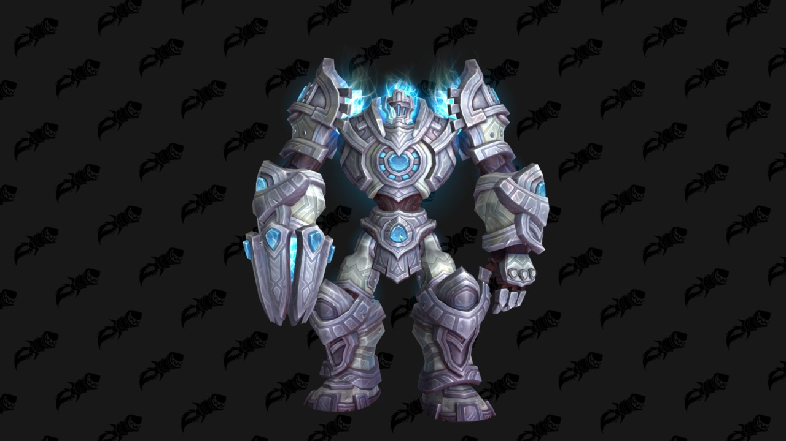
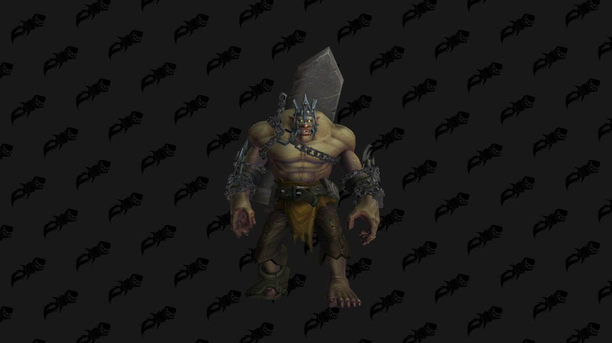
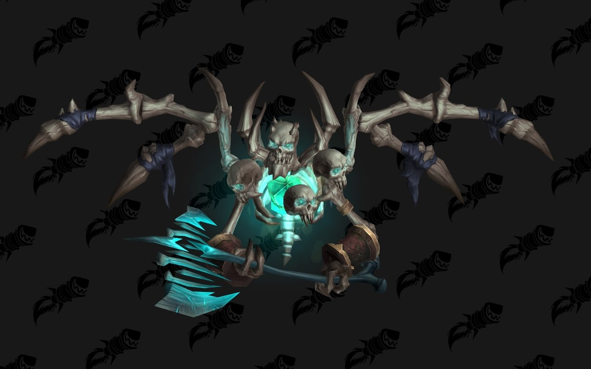
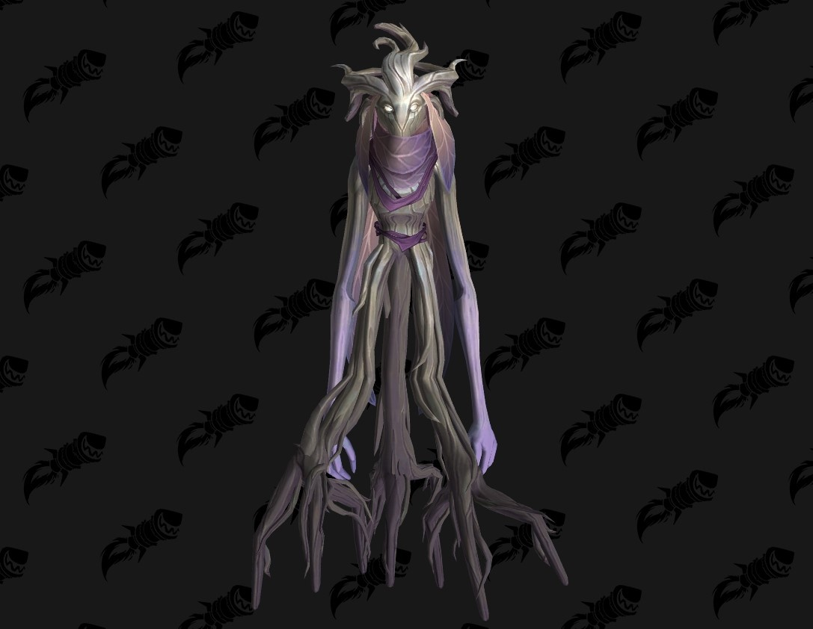

Weltbosse Shadowlands
Valinor, das Licht der Aeonen
{kind=link}
Der unglaublich mächtige Zenturio Valinor wurde von den Kyrianern erschaffen, um ihre Kämpfgestähltesten Krieger zu prüfen. Doch seit die Verschmähten ihn entführt und mit der Saat des Zweifels infiziert haben, betrachtet Valinor alle Gegner als Herausforderer.
Zusammenfassung über den Kampf :
Valinor wird aktiv , sobald alle Fässer mit Anima in der Nähe zerstört wurden. Er wird von Lysonia befehligt, die in der Nähe schwebt. Seine mächtige 'Animaladung' verursacht Schaden in einem Bereich und sollte gemieden werden , und er kann Gruppen von Gegnern mit 'Geladene Animaexplosion' dezimieren, wenn diese sich nicht verteilen. Valinor setzt regelmäßig 'Entfesselte Anima' ein und greift während der Effektdauer viele Bereiche mit 'Animaladung' an
Nurgash Schlammborn
{kind=link}
Nurgash wurde aus der schlannufeb Nasse vieler tropfender Gräber geformt und von Denathrius' besten Zauberern mit dunkler Magie verstärkt. Er mag ja nicht der intelligenteste Diener sein , doch seine Fäuste können ganze Schlösser niederreißen.
Zusammenfassung über den Kampf :
Nurgash ist ein mächtiger Krieger , der mit seinen Fäusten hart zuschlägt. Er nutzt außerdem Steinmagie, um einen Bereich mit 'Erdexplosion' anzugreifen, und lässt einen 'Steinhagel' auf alle weit entfernten Gegner niedergehen, also bleibt in seiner Nähe. Durch 'Gehärterter Schlamm' wird er mit der Zeit stärker und kann gegen ende des Kampfes sehr hohen Schaden verursachen.
Mortanis
{kind=link}
Mortanis ist einer der belesensten Totenbeschwörer des Hauses der Rituale und arbeitet unermüdlich an einem Mittel, das ihm eine mächtigere Gestalt verleihen kann.Nun steht er kurz vor dem Durchbruch.
Zusammenfassung über den Kampf :
Mortanis beginnt den Kampf , sobald alle seine Totenbeschwörer besiegt sind , und verwandelt sich in eine mächtige Kreatur aus Knochen. 'Krichendes Rückgrat' fügt Gegnern in einer Linie schweren Schaden zu, während 'Wiederspenstige Überreste' dreinmal in kreisförmigen bereichen ansteigender Größe ausbrechen. Mehrrere seiner Angriffe teilen ihren Schaden auf die betroffenen Spielercharacktere auf , darunter 'Schreiender Schädel' und 'Knochenspalten'. Sobald er geschwächt ist , setzt er 'Herr der Gefallenen' ein und kann während der Effektdauer schnell Flachenschadenszauber einsetzen.
Oranomonos die Immerspriessende
{kind=link}
Oranomonos war einst die älteste Wächterin von Tirna Scithe, doch mittlerweile welkt sie ander der Seite des großen Baums dahin. Da ihr kaum noch Anima bleibt, ist sie nicht mehr in der Lage, Freund von Feind zu unterscheiden, während sich die Gorm ab ihrem verfallenden Leib satt fressen.
Zusammenfassung über den Kampf :
Oranomonos liegt im Sterben , verfügt aber immer noch über große Macht , die sie gegen Euch einsetzt. Bleibt auf distanz, wenn sie die 'Saat des Kummers' herbeiruft, und meidet 'Verdorrte Winde' , die sich umherbewegen. Nutzt mächtige Defensivfähigkeiten und versammelt Euch für effizientere Heilung, wenn sie ihr 'Klagelied des gefallenen Sanktums' singt.